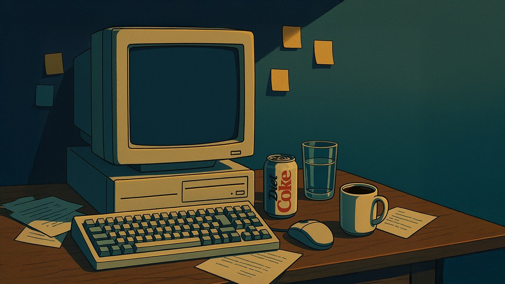

Case Study
Building the GTM strategy, beta community, and CRM infrastructure for an AI-powered cultural research tool — from concept to 150+ members in 7 days

150+
Beta members in 7 days, organic only
$0
Paid acquisition spend
Q1 2026
Product launch target
The Product
Digital Culturist, created by strategist Carissa Estreller, solves a problem every cultural researcher knows intimately: the scattered mess of screenshots, bookmarks, saved TikToks, and half-formed observations that never get organized into actual insight. The platform lets users upload cultural fragments — screenshots, quotes, articles, memes — alongside personal notes about why each piece matters, then uses AI to identify thematic clusters and surface patterns.
The Approach
The Results
What I Did